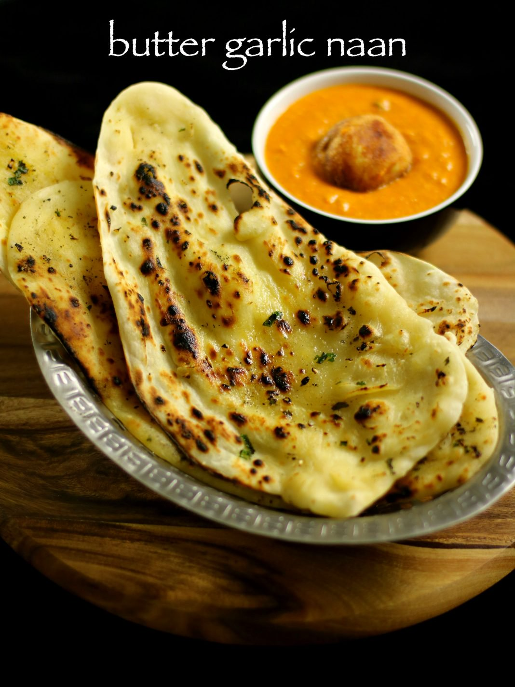

|  |
Garlic Naan |
Ingredients
- 1 cup maida or all purpose flour
- 3/4 tsp baking powder
- 2/3 rd cup of curd or yoghurt
- 1/4tsp baking soda
- 1/2tsp sugar
- 2 tbsp oil
- 1 tsp oil
- salt to taste
Instructions
Garlic Naan:
In a bowl combine 1 cup maida, salt to taste, ¼tsp baking soda, ¾ tsp baking powder and ½ tsp sugar.
next add 2/3rd cup of curd and mix well.
if sticky then add required amount of maida and knead dough.
punch well and make a non sticky soft dough.
add a tsp of oil and coat well.
cover with moist cloth and rest for minimum of 1 hour.
after an hour, pinch a small lemon sized ball.
dust with some maida and roll to a oval shape using rolling pin.
make sure you do not make too thin nor thick.
apply water on one side of naan.
now slowly flip over and put it on hot tawa.
slightly press. this helps the naan to stick on to the tawa and when you can flip the tawa upside down it will be intact.
brush some garlic butter over the naan.
now after a minute, flip the tawa upside down and cook naan directly on flame till they turn golden brown
finally add some more butter
serve garlic naan hot